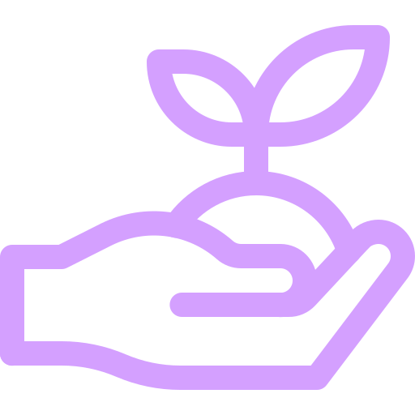

Currículum Digital con Código QR
Destaca entre la competencia con un currículum interactivo y accesible.
¿Por qué usar un código QR en tu currículum?
El código QR es una herramienta moderna y práctica que permite a los reclutadores acceder a tu
currículum digital de manera rápida y sencilla, simplemente escaneando el código con su teléfono móvil.
Ya sea que tengas una copia impresa o una tarjeta personal, el código QR actúa como un puente hacia tu
CV en línea, actualizado en tiempo real. Así, tu currículum estará siempre accesible, sin importar el dispositivo.
Beneficios de usar el Código QR
- Accesibilidad inmediata: El reclutador puede escanear el código QR con su teléfono móvil y acceder al currículum digital en cualquier momento.
- Portabilidad: Lleva tu currículum siempre contigo, sin necesidad de tener versiones impresas. El código QR facilita el acceso desde cualquier dispositivo.
- Acceso a una página web personal: El código QR redirige a una página web personalizada donde los reclutadores pueden ver tu CV, proyectos y descargarlo si lo desean.
- Actualización constante: Mantén tu CV actualizado en todo momento. El código QR siempre redirige a la versión más reciente sin necesidad de imprimir nuevas copias.
- Seguridad y privacidad: Puedes personalizar el acceso a tu CV digital para que solo se vea lo que deseas que se vea en ese momento.
Casos de Uso del Código QR
Existen diversas situaciones en las que el código QR es muy útil:
- Currículum impreso: Imprime tu CV en formato A4 con un código QR para que los reclutadores puedan acceder fácilmente al CV digital y siempre contar con la versión más actualizada.
- Tarjeta personal: Lleva una tarjeta de presentación con tu código QR para facilitar el acceso a tu perfil digital sin necesidad de entregar un CV impreso. ¡Ideal para ferias de empleo o eventos de networking!
- Actualización fácil: Mantén tu CV actualizado en todo momento sin necesidad de imprimir nuevas copias. ¡Todo se hace de manera digital!
- Accesibilidad inmediata: El código QR puede ser escaneado en cualquier momento, incluso si no estás en la misma ubicación que el reclutador.
Página Web Personalizada
La página web que diseñamos para ti será el centro de tu perfil profesional. Desde allí, los reclutadores podrán
conocer más sobre ti, tu experiencia, tus habilidades y ver tus proyectos. Además, podrán descargar tu CV digital
en formato PDF para tenerlo siempre disponible. Todo esto estará centralizado en un solo lugar.
Ventajas de tener tu página web personalizada:
- Visibilidad: Tu página web estará disponible para los reclutadores 24/7, lo que facilita el acceso a tu información sin importar el momento o el lugar.
- Accesibilidad: Los reclutadores podrán ver tu CV, explorar tu portfolio y obtener más información sin necesidad de tenerlo almacenado en sus dispositivos.
- Actualización sencilla: Siempre tendrás el control sobre tu página y tu CV, actualizándolos cuando lo necesites. ¡No más currículums desactualizados!
- Más profesional: Tener una página web personalizada para tu CV te presenta como un candidato moderno y profesional que entiende el valor de la tecnología.
Ventaja Medioambiental

El uso de un currículum digital con código QR no solo tiene beneficios para la eficiencia y la accesibilidad, sino que también contribuye positivamente al medio ambiente. Al optar por una versión digital de tu currículum, ayudas a reducir el uso de papel y la necesidad de imprimir múltiples copias físicas.
- Reducción de residuos: Al no tener que imprimir múltiples copias de tu currículum, reduces la cantidad de papel y tinta que se utiliza, lo que a su vez disminuye la generación de residuos.
- Menos uso de recursos naturales: La producción de papel y tinta implica un uso significativo de recursos naturales como árboles, agua y energía. Usar una opción digital ayuda a conservar estos recursos.
- Transporte más sostenible: Las copias impresas de los currículums requieren ser transportadas, lo que genera emisiones de carbono. Con un currículum digital accesible a través de un código QR, eliminas la necesidad de transporte físico y contribuyes a reducir la huella de carbono.
- Ahorro de energía: La impresión y distribución de currículums impresos consume energía. En cambio, la distribución digital a través de códigos QR es mucho más eficiente y menos perjudicial para el medio ambiente.
Usar un currículum digital es un pequeño pero significativo paso hacia la sostenibilidad. Con el avance de la tecnología, cada vez más opciones digitales están disponibles, permitiéndonos reducir el impacto ambiental sin sacrificar la calidad o la accesibilidad.